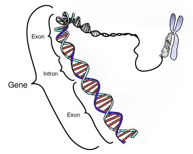
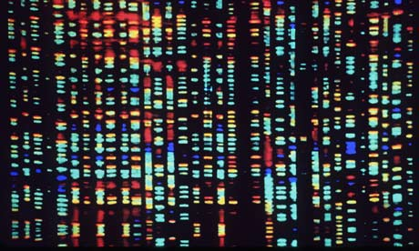

Imagine um Manual de Instruções

Um guia completo que explica como montar, fazer funcionar e manter tudo em ordem. Agora imagine que esse manual está dentro de cada célula do seu corpo. É isso que chamamos de genoma.
O que é o Genoma?
O genoma é o conjunto total de informações genéticas de um ser vivo. É nele que estão escritas todas as instruções que dizem como o corpo deve se formar, crescer, funcionar — e até como ele deve se defender ou se reproduzir.
Estrutura do DNA
Esse manual é feito de algo chamado DNA — o ácido desoxirribonucleico. Uma longa molécula formada por quatro letrinhas: A, T, C e G. Essas letras são as bases do DNA, e elas se combinam em pares para formar a famosa estrutura de dupla hélice. É como se fossem as páginas do manual, cheias de informações codificadas.
Genes e Proteínas
Dentro desse DNA, existem trechos chamados genes. Cada gene é como um parágrafo do manual, responsável por instruir a produção de proteínas — que são as peças fundamentais para construir e manter o nosso corpo funcionando.
Regulação do Genoma
Mas o genoma vai além dos genes. Ele também tem regiões que regulam quando, onde e quanto de cada gene deve ser usado. É como um sistema de organização, que decide a hora certa de cada instrução entrar em ação.
- O Genoma Humano
No caso do ser humano, o genoma é imenso: são cerca de 3 bilhões de pares de bases, organizados em 46 cromossomos. Um verdadeiro livro da vida.
O Projeto Genoma Humano
E foi com esse espírito de descoberta que nasceu o Projeto Genoma Humano, uma iniciativa científica que mapeou, pela primeira vez, quase todas as letras do nosso DNA. Um feito que abriu portas para novas formas de tratar doenças, entender a hereditariedade e explorar o que nos torna únicos.
Conclusão
O genoma é, enfim, a linguagem da vida. Um código invisível que habita cada célula, contando silenciosamente a história de quem somos — e de como a natureza escreve seus segredos.